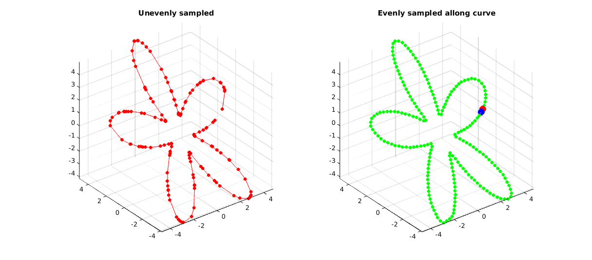
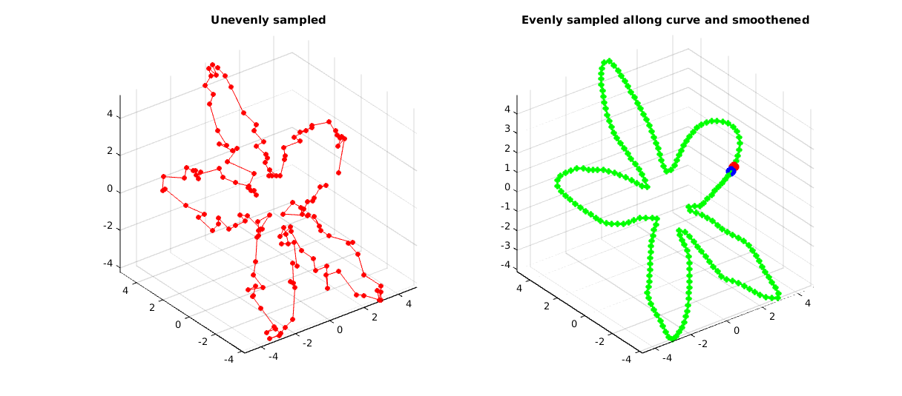

evenlySampleCurve
Below is a basic demonstration of the features of the evenlySampleCurve function.
Contents
clear; close all; clc;
PLOT SETTINGS
fig_color='w'; fig_colordef='white'; markerSize=15; lineWidth=2;
EXAMPLE USING NORMAL INTERPOLATION
%Simulating the case of an unevenly sampled loop curve ns=150; t=sort(linspace(0,2*pi,ns)+pi/10*rand(1,ns)); t=unique(t); %removing double points t=t(t<2*pi);%Removing 2*pi points since they are the same as the 0 point r=3+2.*sin(5*t); [x,y] = pol2cart(t,r); z=y; V=[x(:) y(:) z(:)]; interpMethod='pchip'; closeLoopOpt=1; n=200; [Vg]=evenlySampleCurve(V,n,interpMethod,closeLoopOpt); hf1=figuremax(fig_color,fig_colordef); subplot(1,2,1); hold on; title('Unevenly sampled'); plot3(V(:,1),V(:,2),V(:,3),'r.-','MarkerSize',markerSize); drawnow; view(3); grid on; axis equal; axis tight; subplot(1,2,2); hold on; title('Evenly sampled allong curve'); plot3(Vg(:,1),Vg(:,2),Vg(:,3),'g.-','MarkerSize',markerSize); plot3(Vg(1,1),Vg(1,2),Vg(1,3),'r.','MarkerSize',2*markerSize,'lineWidth',lineWidth); plot3(Vg(end,1),Vg(end,2),Vg(end,3),'b.','MarkerSize',2*markerSize,'lineWidth',lineWidth); drawnow; view(3); grid on; axis equal; axis tight;
EXAMPLE USING CSAPS
%Adding noise V=V+0.2.*randn(size(V)); interpMethod=0.7; closeLoopOpt=1; [Vg]=evenlySampleCurve(V,n,interpMethod,closeLoopOpt); hf1=figuremax(fig_color,fig_colordef); subplot(1,2,1); hold on; title('Unevenly sampled'); plot3(V(:,1),V(:,2),V(:,3),'r.-','MarkerSize',markerSize); drawnow; view(3); grid on; axis equal; axis tight; subplot(1,2,2); hold on; title('Evenly sampled allong curve and smoothened'); plot3(Vg(:,1),Vg(:,2),Vg(:,3),'g.-','MarkerSize',markerSize,'lineWidth',lineWidth); plot3(Vg(1,1),Vg(1,2),Vg(1,3),'r.','MarkerSize',2*markerSize,'lineWidth',lineWidth); plot3(Vg(end,1),Vg(end,2),Vg(end,3),'b.','MarkerSize',2*markerSize,'lineWidth',lineWidth); drawnow; view(3); grid on; axis equal; axis tight;

GIBBON www.gibboncode.org
Kevin Mattheus Moerman, gibbon.toolbox@gmail.com